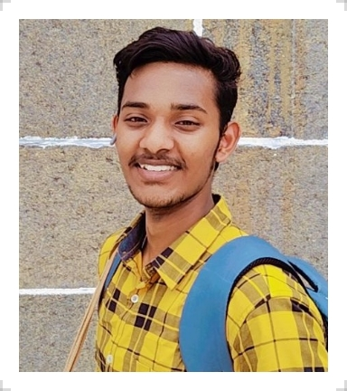

My Resume

Name: Rapaka Sai Ravindra Abhinav
-
Summary
I am from a middle-class family father is a college lecturer and mother is a house-wife
-
Education
- I am pursuing my btech engineering in sri chandrashekhara saraswathi viswa mahavidhyalay
- I completed my intermediate4 in narayana college
- I completed my Tenth class in aditya school
-
Work Experience
null
-
skills
-
I love singing songs and learnt carnatic music
-
I have c and c++ coding skills and certifications
-
I also have a talent of keyboard playing
- Interested in programming skills
-
Hobbies
singing is my hobby
My youtube channel
contact